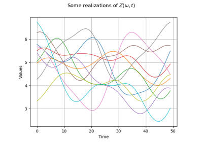
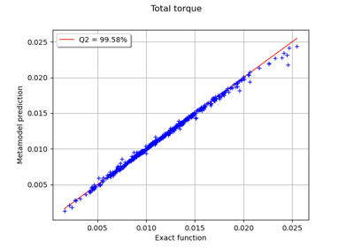
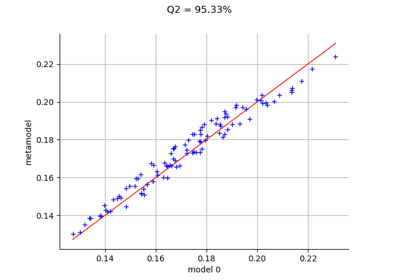
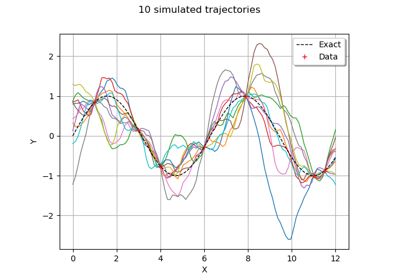
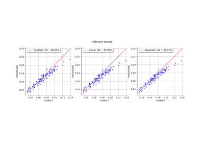
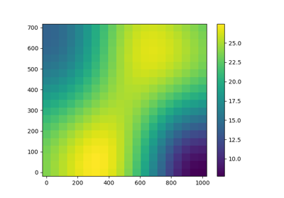
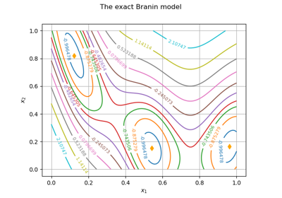

Basis¶
- class Basis(*args)¶
Basis.
- Available constructors:
Basis(functionsColl)
Basis(size)
- Parameters:
- functionsColllist of
Function Functions constituting the Basis.
- sizeint
Size of the Basis.
- functionsColllist of
Examples
>>> import openturns as ot >>> dimension = 3 >>> input = ['x0', 'x1', 'x2'] >>> functions = [] >>> for i in range(dimension): ... functions.append(ot.SymbolicFunction(input, [input[i]])) >>> basis = ot.Basis(functions)
Methods
build(index)Build the element of the given index.
Accessor to the object's name.
Get the dimension of the Basis.
getId()Accessor to the object's id.
Accessor to the underlying implementation.
getName()Accessor to the object's name.
getSize()Get the size of the Basis.
getSubBasis(indices)Get a sub-basis of the Basis.
isFinite()Tell whether the basis is finite.
Tell whether the basis is orthogonal.
setName(name)Accessor to the object's name.
add
- __init__(*args)¶
- build(index)¶
Build the element of the given index.
- Parameters:
- indexint,

Index of an element of the Basis.
- indexint,
- Returns:
- function
Function The function at the index index of the Basis.
- function
Examples
>>> import openturns as ot >>> dimension = 3 >>> input = ['x0', 'x1', 'x2'] >>> functions = [] >>> for i in range(dimension): ... functions.append(ot.SymbolicFunction(input, [input[i]])) >>> basis = ot.Basis(functions) >>> print(basis.build(0).getEvaluation()) [x0,x1,x2]->[x0]
- getClassName()¶
Accessor to the object’s name.
- Returns:
- class_namestr
The object class name (object.__class__.__name__).
- getDimension()¶
Get the dimension of the Basis.
- Returns:
- dimensionint
Dimension of the Basis.
- getId()¶
Accessor to the object’s id.
- Returns:
- idint
Internal unique identifier.
- getImplementation()¶
Accessor to the underlying implementation.
- Returns:
- implImplementation
A copy of the underlying implementation object.
- getName()¶
Accessor to the object’s name.
- Returns:
- namestr
The name of the object.
- getSize()¶
Get the size of the Basis.
- Returns:
- sizeint
Size of the Basis.
- getSubBasis(indices)¶
Get a sub-basis of the Basis.
- Parameters:
- indiceslist of int
Indices of the terms of the Basis put in the sub-basis.
- Returns:
- subBasislist of
Function Functions defining a sub-basis.
- subBasislist of
Examples
>>> import openturns as ot >>> dimension = 3 >>> input = ['x0', 'x1', 'x2'] >>> functions = [] >>> for i in range(dimension): ... functions.append(ot.SymbolicFunction(input, [input[i]])) >>> basis = ot.Basis(functions) >>> subbasis = basis.getSubBasis([1]) >>> print(subbasis[0].getEvaluation()) [x0,x1,x2]->[x1]
- isFinite()¶
Tell whether the basis is finite.
- Returns:
- isFinitebool
True if the basis is finite.
- isOrthogonal()¶
Tell whether the basis is orthogonal.
- Returns:
- isOrthogonalbool
True if the basis is orthogonal.
- setName(name)¶
Accessor to the object’s name.
- Parameters:
- namestr
The name of the object.
Examples using the class¶

Create a process from random vectors and processes



Example of multi output Kriging on the fire satellite model

Kriging the cantilever beam model using HMAT

Kriging : generate trajectories from a metamodel

Choose the trend basis of a kriging metamodel

Kriging with an isotropic covariance function

Kriging: metamodel of the Branin-Hoo function


Estimate Sobol indices on a field to point function